Decision trees,
from splits to pruning.
Learn a sequence of questions from data. Understand the impurity calculations, grow a tree, and decide which branches deserve to stay.
One chapter. Five connected steps.
Each block has its own Learn, Revise and Go deeper controls, a revision sheet, and return-review questions. Core explanations, worked calculations and derivations stay available at every depth.
A decision tree divides a prediction problem into smaller questions. Each answer sends an observation into a smaller region; a leaf supplies the prediction. We will derive how the questions are chosen, why a deeper tree can fit training data better, and how validation and pruning control its complexity.
These notes join the decision-tree lecture and its pruning continuation, including their handwritten examples, the weather calculation, entropy versus error, efficient pruning counts, and the closing random-forest sketch. Original numerical examples and interactive tools make the intermediate steps visible. The previous chapter's projections supply a useful contrast: tree splits operate along the supplied feature axes, so the representation still matters.
What you should be able to do afterward
- Trace a tree prediction, convert a path into a rule, and connect numerical tests to axis-parallel regions.
- Handle binary, ordinal, nominal, and real-valued features without assuming an arbitrary category code has meaningful order.
- Derive leaf predictions, Gini impurity, entropy, weighted split gain, and the difference from misclassification error.
- Build a small greedy tree, reproduce the lecture's weather gains, and search valid numerical thresholds.
- Explain regression-tree squared-error fitting, Boolean expressivity, greedy-search limits, and training cost assumptions.
- Distinguish training, validation, and test error; explain pre-pruning, reduced-error pruning, complexity penalties, and rule pruning.
- Calculate and compare complete pruned subtrees, including replacement labels, validation counts, and complexity units.
- Explain the lecture's forest introduction and the roles of data sampling, feature randomization, and averaging.
Reading route: sections 1–8 explain the model and split criterion. Sections 9–13 grow and analyze trees. Sections 14–20 develop overfitting and pruning, with a complete interactive example. Sections 21–22 connect ensembles and practical choices. Practice and revision then test the same material.
Contents · choose a section
Read the tree before fitting it
Connect a prediction path to a rule and a region, then choose valid feature tests.
Learn: follow the examples and open the full explanations when ready. These controls affect sections 1–3 only.
1. Why ask a sequence of small questions?
Lecture connection: interpretable decisions, fraud/insurance/customer applications, and comparison with other decision boundaries.
A tree turns a prediction into a sequence of questions. First understand what its path says; then ask how the questions are learned.
A classification tree follows a path of feature tests and returns a leaf’s prediction. A short path exposes the sequence of conditions used for that decision.
ContextInterpretability, applications and their limits
A classifier such as shared-covariance GDA or logistic regression uses a score that combines features. A usual classification tree instead asks questions such as “is this sender already known?” or “is this measurement at most 3?” A complete path records the conditions that led to one prediction. A small tree can therefore make its decision procedure easy to inspect.
The lecture motivates this with fraud detection, insurance and credit decisions, and customer analysis. It also asks how to assess a model against legal constraints. A readable path helps inspection, but a tree can still use inappropriate features, proxies, or biased observations. Tree structure alone cannot establish that a decision is fair, causal, or legally compliant.
For the lecture's credit-law example, the official Regulation B notification provision requires specific principal reasons for the adverse actions it covers. This illustrates why understanding the actual decision factors can matter. It does not make a particular model family automatically compliant or prohibit another family just because its explanation is harder.
Tree learning is supervised: training observations include inputs and target labels or responses. Its partition can grow in complexity as more splits are permitted, which is why it is commonly called nonparametric. A fitted tree still has learned thresholds, a topology, and leaf values. Classification trees generally fit the input-to-label relationship directly; they need not build a generative density for each class.
Before moving on: Explain what a readable decision path does and does not establish.
2. Read the structure and see the regions
Lecture connection: internal tests and labeled leaves, the spam sketch, and axis-parallel decision boundaries.
A single path is an AND of conditions. The complete predicted region can combine several paths.
- Root
- The first node; its depth is zero.
- Internal node
- Applies a feature test.
- Edge
- Records an answer to that test.
- Leaf
- Returns a class or numerical prediction.
- Depth
- Counts edges from the root.
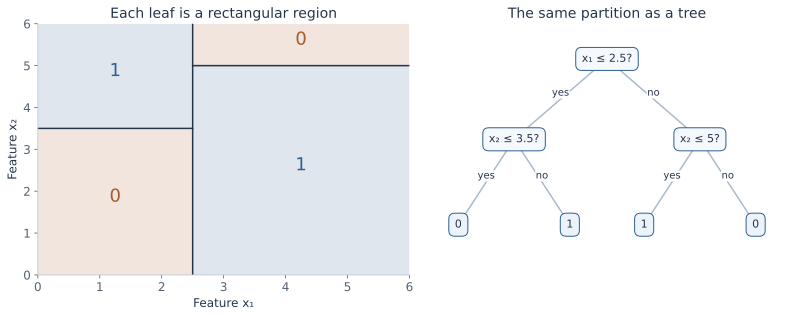
Trace a pathRouting, equality and rectangular regions
The root is the first node. An internal node applies a test. An edge records an answer, and a leaf returns a prediction. A binary split has two children; a categorical multiway split can have more. The depth of the root is zero, and a path's depth counts its edges.
For a numerical test, we will send \(x_j\le t\) left and \(x_j>t\) right. This convention resolves equality. Prediction evaluates only one path. For example, a spam rule could first check whether the sender is known, then inspect a domain category, and then a content feature. This is an illustrative rule structure; the tests must be learned and validated before claiming predictive performance.
Each numerical test cuts the current node's region with a hyperplane perpendicular to one coordinate axis. Descendant cuts act only inside that region. Intersecting all path conditions gives an axis-parallel rectangle in two dimensions, or a hyperrectangle in d dimensions, possibly unbounded. The region predicted as one class can be a union of several leaves.
A path is a conjunction: all its tests must be satisfied. Multiple paths reaching the same class combine by an OR. For the pictured lower-left class-0 leaf, a rule is \((x_1\le2.5)\land(x_2\le3.5)\Rightarrow0\). A class boundary need not be one straight line, even though each individual test is simple.
In the pictured tree, where does (x₁,x₂)=(2.5,3.5) go? What if only x₁ increases to 2.6?
Check your reasoning
At (2.5,3.5), both ≤ tests take the left branches, so the prediction is 0. At (2.6,3.5), the root goes right and x₂≤5 leads to class 1. Boundary conventions affect routing.
Before moving on: Trace equality cases and translate one root-to-leaf path into a rule.
3. Let the feature type determine the possible questions
Lecture connection: binary values, ordinal categories, non-ordinal categories, one-hot encoding, subsets, and thresholds.
The meaning of a feature determines which questions make sense. Numerical codes alone do not create order.
Feature typesChoose the test family before searching
A binary feature offers a direct two-way test. For an ordinal category, such as an ordered grade, a threshold can group the lower ordered values against the higher ones. Its order must be defined; alphabetical spelling is not a measurement scale.
A nominal feature, such as a domain category, has no natural order. Choices include one child per value, one value versus the rest, or a subset-versus-complement test \(x_j\in C\). One-hot encoding supplies binary indicators, but it changes the available one-step questions. Coding red=0, green=1, blue=2 and blindly thresholding the code imposes an arbitrary order.
For a real-valued feature, sort the values observed at the current node. Every gap between two distinct consecutive values gives a candidate partition; a midpoint is a convenient representative threshold. Equal feature values must travel together. Different thresholds inside the same empty gap give the same training partition, although they can route a future observation differently.
Count candidatesNominal partitions, repeated tests and unseen values
With r nominal categories, there are \(2^{r-1}-1\) distinct nonempty binary partitions after identifying a subset with its complement. Searching every grouping can be costly. An ordinal feature has only r−1 gaps between adjacent distinct values. The split family is part of the model, not a detail to leave unspecified.
The same numerical feature can be tested again farther down a path to refine an interval. A categorical feature already fixed to one value by an ancestor offers no further split there. Missing values and categories unseen during fitting need an explicit policy, such as a learned missing-value route or a documented fallback; the basic complete-data formulas do not supply one automatically.
Five nominal categories are encoded 0,…,4. Does thresholding those codes search every category grouping? How many unordered nonempty binary groupings exist?
Check your reasoning
No. Code thresholds impose an arbitrary order and search only its four adjacent cuts. There are 2⁴−1=15 distinct subset/complement groupings. Use meaningful order only for ordinal features.
Before moving on: Distinguish ordinal order, nominal membership and distinct numerical gaps.
Keep the argument connected
Evaluate one test at a time; numerical equality goes to the stated ≤ branch.
Each axis-aligned numerical test cuts the current region, not the entire space again.
Ordinal values have order; nominal codes do not. Numerical candidates lie between distinct observed values.
Try before rereading
Answer on paper, aloud, or mentally before opening the feedback. Check your method, assumptions and interpretation.
- Translate a two-test path into a logical rule.
- Why can changing the encoding of a nominal feature alter a threshold tree?
- Does a readable tree establish fair or lawful decisions?
Review answers and reasoning
- Use the conjunction of both path conditions; several same-class paths form a union.
- The ordering of arbitrary numeric codes changes which category groups a threshold can express.
- No. Features, data and decision requirements still matter; structure helps inspection but does not establish compliance.
Self-check: did you justify the method, state the assumptions and units, and explain the result? Separate a missing concept from an arithmetic slip.
Save your progress or a return date
Self-reported, saved in this browser where available; viewing a page does not mark mastery.
Choose a gap after trying the questions. These are heuristics, not an optimal schedule or reminder service.
Next: turn node counts into impurity and split gain. Back to this block’s controls ↑
How does a tree choose a good split?
Start with the labels in one node. Build the meaning of impurity, then compare what a split changes.
Learn: follow the examples; open each derivation when ready. These controls affect sections 4–8 only.
4. What should a leaf predict?
A leaf must summarize several labels with one prediction. Counts tell us both the predicted class and how mixed the sample is.
Let S be the training observations reaching a node, \(n=|S|>0\), and \(n_c\) the number with class c. The empirical class distribution is:
Read a leaf through its counts
4 positive, 4 negative. The empirical positive probability is 1/2. Both class choices make 4 training errors; our stated tie rule selects class 0. This is the same balanced parent used below.
Choose a class with the largest training count. This minimizes the error of a constant prediction inside this leaf.
DerivationWhy the majority rule follows from counts
This is also the categorical maximum-likelihood estimate obtained by the constrained count calculation from the Naive Bayes chapter, now applied to labels within a leaf. For a constant predicted class a, the training error count is n−nₐ. Therefore equal-cost classification selects a majority class:
- Predict class a for every observation in the leaf.
- Exactly nₐ labels match; n−nₐ labels do not.
- Minimizing n−nₐ means maximizing nₐ.
DerivationTies, probabilities and unequal costs
Specify a deterministic tie rule; the binary teaching tools here choose class 0 when the counts tie. Estimated leaf probabilities are empirical proportions, not guaranteed calibrated population probabilities. A tiny pure leaf can report an extreme estimate from very little evidence. Smoothing or a different cost-sensitive prediction rule changes the leaf estimator or decision rule and should be stated explicitly.
A leaf contains 6 positives and 2 negatives. What are its prediction, positive probability, and error count?
Check your reasoning
Prediction 1; probability 6/8=3/4; two errors. A probability estimate and a hard class prediction answer different questions. State a tie rule when counts tie.
Before moving on: Explain the majority rule, give its equal-cost assumption, and distinguish a class label from a probability estimate.
5. Measure impurity with Gini
Lecture connection: class proportions, pure endpoints, the binary maximum, and the K-class extension.
Impurity asks how mixed the labels are. Gini turns the whole class distribution into one number.
An impurity measure summarizes how mixed the labels are at a node. For K classes, Gini impurity is:
K: number of classes · \(\hat p_c\): proportion in class c · n>0.
One balanced node, step by step
4 positive, 4 negative. Both proportions are 1/2.
- Square the proportions: \(p_1^2+p_0^2=1/4+1/4=1/2\).
- Subtract from one: \(G=1-1/2=1/2\).
- Interpret: this is the maximum binary impurity; neither observed class dominates.
To interpret it, imagine drawing a true label and, independently, a guessed label from the same node distribution. The chance of a match is \(\sum_c\hat p_c^2\); Gini is the chance they differ. It is not the error of the deterministic majority-label classifier.
DerivationDerive the binary form and its maximum
For binary labels with positive proportion p, the formula becomes \(G(p)=1-p^2-(1-p)^2=2p(1-p)\). It is zero at p=0 or 1 and reaches 1/2 at p=1/2. Differentiating gives \(G'(p)=2-4p\) and \(G''(p)=-4\): the curve is concave.
- Substitute the two proportions: \(1-p^2-(1-p)^2\).
- Expand the square: \(1-p^2-1+2p-p^2=2p(1-p)\).
- Set \(2-4p=0\), giving p=1/2. The negative second derivative establishes a maximum.
DerivationProve the K-class bound
For K classes, \(\sum_c(p_c-1/K)^2\ge0\) implies \(\sum_c p_c^2\ge1/K\). Hence \(G\le1-1/K\), with equality for the uniform class distribution. A pure node has G=0. The maximum changes with the number of classes; binary plots should not be read as having the same maximum for every K.
The squared deviations vanish only when all K proportions equal 1/K. Substituting the lower bound into \(1-\sum_cp_c^2\) gives the upper bound on Gini.
A leaf has 3 positives and 1 negative. Calculate Gini. Is it the same as the majority prediction’s error rate?
Check your reasoning
\(G=1-(3/4)^2-(1/4)^2=3/8\). The majority error rate is (1/4). They are different: Gini describes a distribution; majority error describes the fitted constant class decision.
Before moving on: Calculate Gini, interpret its endpoints, and derive the binary and multiclass maxima.
6. Derive entropy from label surprise
Lecture connection: binary and multiclass entropy, ideal code lengths, uncertainty, and the entropy curve.
Entropy measures average label surprise. It uses the same proportions as Gini, but a different shape and units.
Expected surprise, not just a formula
A rare label carries more surprise than a common one. Assign an event of probability p the self-information \(-\log_2p\) bits. This convention makes the surprise of two independent events additive, since \(-\log_2(pq)=-\log_2p-\log_2q\). Average over the node's label distribution:
Each observed class: 1 bit of surprise.
Average H=1 bit.
Common class ≈0.415 bits; rare class 2 bits.
Average H≈0.811278 bits.
Use base-2 logarithms for bits. Each term is probability × surprise.
Use \(0\log_20=0\), the continuous limit as p approaches zero. A class that never appears contributes zero; evaluating log0 directly in a program is unnecessary. For a binary node:
DerivationDerive concavity and the binary / K-class maxima
The endpoints are zero. In the interior, \(h'(p)=\log_2((1-p)/p)\), and \(h''(p)=-1/[\ln2\,p(1-p)]<0\). Thus the maximum is h(1/2)=1 bit. The multiclass maximum is \(\log_2K\), attained at equal proportions. One way to see the bound is to apply concavity of log to the weighted average \(\sum_{p_c>0}p_c\log_2(1/p_c)\le\log_2 K_+\le\log_2 K\), where K₊ is the number of positive-probability classes.
- The first derivative vanishes at p=1/2.
- The second derivative is negative for 0<p<1, so this stationary point is a maximum.
- For K classes, concavity of log bounds the average surprise by the log of the number of supported classes.
DerivationConnect entropy to coding, with the right qualification
The lecture relates entropy to coding class labels. The real-valued ideal length −log₂p does not always equal the length of a one-label binary prefix code, which must use integer lengths. Entropy is the ideal average/asymptotic coding rate; block or arithmetic coding can approach it. For tree splitting, the expected surprise formula is the quantity we calculate.
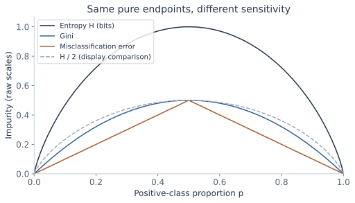
Keep the scales straight. Binary entropy peaks at 1 bit; Gini and majority-error impurity peak at 1/2. H/2 in the figure is explicitly a display comparison.
A binary leaf becomes pure. What happens to entropy and Gini? Why should the code avoid evaluating log 0?
Check your reasoning
Both impurities become zero. The absent class contributes zero through the limit \(p\log p\to0\); it is unnecessary to calculate log 0. A pure training leaf does not establish zero population error.
Before moving on: Explain expected surprise, retain the zero-probability convention, and distinguish binary from multiclass maxima.
7. A split is good when the weighted children are purer
Lecture connection: information gain and branch-size weighting in binary and multiway splits.
A useful split improves the average observation’s child impurity. A tiny pure child alone is not enough to judge the split.
A candidate test partitions S into disjoint nonempty children \(S_1,\ldots,S_B\). Let \(w_b=|S_b|/|S|\). A randomly selected observation from S reaches child b with probability wᵦ, so the expected child impurity uses those weights:
Keep the same eight observations
- Measure before: parent Gini = 1/2.
- Average after: \((2/8)\times0+(6/8)\times(4/9)=1/3\).
- Subtract: \(\Delta G=1/2-1/3=1/6\).
For entropy, this is information gain. For Gini it is a Gini decrease. The parent term is common to all candidates at that node, so maximizing gain is the same as minimizing weighted child impurity. An unweighted average would give a small and a large child equal influence, answering a different question.
DerivationWhy valid entropy and Gini gains are nonnegative
Parent class proportions are weighted averages of child proportions. Entropy and Gini are concave, meaning their value at an average distribution is at least the corresponding average of their values. Therefore a valid split has nonnegative empirical gain, up to numerical rounding. In binary notation:
The vertical gap between the curve and the weighted child point is the gain. A split can contain a child that is more mixed than the parent while still improving the weighted average. Empirical gain need not mean that the feature will improve unseen predictions; searching many tests can find chance patterns.
DerivationDerive Gini gain as a variance of child proportions
For binary Gini, expanding the squares gives an especially useful identity:
- Start from \(2p(1-p)-\sum_bw_b\,2p_b(1-p_b)\).
- Use \(\sum_bw_bp_b=p\) to cancel the linear terms.
- The remainder is \(2(\sum_bw_bp_b^2-p^2)\). Expand the weighted squared deviations to obtain the displayed identity.
It measures how much the child class proportions differ. For entropy, the same reduction is the empirical mutual information between the label and the selected branch. This is a statement about the observed node sample; interpreting it as a population dependence requires more evidence.
Complete the missing step: a balanced 8-observation parent splits into [1+,1−] and [3+,3−]. Weighted child Gini is ____. What is the gain?
Check your reasoning
\((2/8)(1/2)+(6/8)(1/2)=1/2\), giving gain 0. Splitting into unequal sizes is not enough: the class proportions did not change.
Now solve independently: [3+,3−] splits into [3+,0−] and [0+,3−]. Give the entropy and Gini decreases. State why the weighting still matters.
Check your reasoning
Both children are pure. The child averages are zero, so entropy decrease is 1 bit and Gini decrease is 1/2. Each child has weight 1/2. The general rule must still weight by size; purity only makes the weighting invisible in this calculation.
Before moving on: Write the weighted criterion, justify the weights, calculate a gain, and explain its nonnegativity.
8. Why immediate classification accuracy can miss a useful split
Lecture connection: the 40-positive/80-negative example and the entropy-versus-error comparison.
A leaf’s hard prediction can stay unchanged while its label distribution becomes more informative. This is why impurity and accuracy are different criteria.
The majority-error impurity is \(M(S)=1-\max_c p_c\), which is min(p,1−p) for binary labels. It measures a leaf's deterministic error rate. Unlike entropy and Gini, its binary curve is linear on each side of 1/2. Child proportions can move apart while remaining on the same side, producing no reduction in immediate majority error.
The lecture’s counterexample
The lecture's parent has 40 positives and 80 negatives. Its candidate children contain [28+,42−] and [12+,38−]. All three majority predictions are class 0. Before splitting there are 40 errors; afterward there are 28+12=40. The weighted misclassification decrease is zero.
Both children still predict class 0.
The child distributions have moved apart.
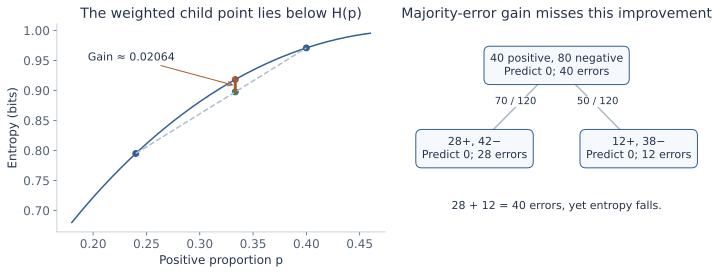
DerivationReproduce the full entropy and Gini calculation
Entropy still falls: the parent is h(1/3)≈0.918296 bits; the children have h(0.4)≈0.970951 and h(0.24)≈0.795040. Their weighted average is about 0.897655, so gain is about 0.020641 bits. Gini decreases from 4/9 to 0.432, giving about 0.012444. The children are differently composed even though their current majority labels agree.
Explain in one or two sentences how a split can have positive entropy gain and zero immediate accuracy gain.
Check your reasoning
Child class proportions can change while remaining on the same side of the majority boundary. Their current hard predictions stay the same, but entropy responds to the changed proportions. Deeper tests may use the structure; validation still has to assess predictive value.
Before moving on: Explain the 40-error example and separate observed impurity gain from unseen predictive performance.
Rebuild the argument in five moves
\(\hat p_c=n_c/n\), with n>0. Predict a training majority under equal error costs; state ties.
\(G=1-\sum_cp_c^2\). Binary maximum 1/2; K-class maximum 1−1/K.
\(H=-\sum_cp_c\log_2p_c\). Use 0log0=0; maximum log₂K bits.
\(\Delta I=I(S)-\sum_b(n_b/n)I(S_b)\). Nonempty children; disjoint samples; weights sum to one.
\(M=1-\max_cp_c\) is majority error. Positive entropy/Gini gain need not change the hard prediction or improve validation error.
Derivation checklist: binary Gini and the K-class bound · entropy concavity and maxima · weighted concavity and the Gini-variance identity. Open the labeled derivations to check every step.
Try this before rereading
Use paper, speech, or a mental explanation. Choose a method before opening the answer. If you need help, revisit the linked idea and then attempt a fresh case.
- Why does a majority label minimize equal-cost leaf errors?
- Derive the binary Gini formula, then state the K-class maximum.
- Why are the child weights nᵦ/n? What goes wrong with a simple average?
- Compute both impurity decreases for [3+,3−] → [3+,0−] and [0+,3−].
- Give a case where positive entropy gain leaves majority predictions unchanged.
Review answers and self-check rubric
- A prediction a matches nₐ observations and misses n−nₐ; maximizing nₐ minimizes misses.
- \(1-p^2-(1-p)^2=2p(1-p)\); uniform K classes give maximum 1−1/K.
- A random parent observation reaches child b with probability nᵦ/n. Equal weighting overrepresents a small child.
- Entropy decreases by 1 bit; Gini by 1/2. Both child impurities are zero.
- The lecture’s [40+,80−] → [28+,42−],[12+,38−] keeps both predictions at 0 but lowers entropy.
Check three things: did you choose the right criterion, state the assumptions/units, and justify the steps? Record a missing assumption separately from arithmetic or method-choice errors. Reading a familiar solution does not establish unaided recall.
Self-reported, saved only in this browser where storage is available. These are separate actions, not automatic mastery scores.
After trying the questions, choose a suggested return gap. The intervals are practical heuristics, not an optimal schedule or a reminder service.
Next connection: use the gain criterion to grow a tree, then reproduce the categorical examples. The threshold workbench lets you test the same weighting and impurity ideas on editable observations.
Grow a tree, then question the fit
Follow a complete weather example, search thresholds, switch to regression and test the limits of greedy growth.
Learn: follow the examples and open the full explanations when ready. These controls affect sections 9–13 only.
9. Grow recursively, making the stopping rules explicit
Lecture connection: GrowTree pseudocode, feature/threshold search, stopping, and the handwritten training-cost estimate.
Growth repeats one local decision inside smaller samples. A fallback leaf is essential when no permitted split remains.
Start with a majority leaf. Compare valid splits, choose the best permitted test, and repeat inside each child.
AlgorithmFull pseudocode and feasible stopping rules
Begin with a leaf that predicts the node's majority. If splitting is permitted, compare all valid candidate tests at that node, choose the best, partition the observations, and repeat separately in each child. This is top-down greedy growth: the current choice uses its immediate impurity reduction, without exhaustively optimizing every possible future subtree.
Grow(S, depth):
compute class counts and a majority prediction
if S is pure or a stopping condition applies:
return a leaf with that prediction
enumerate permitted tests with nonempty, sufficiently large children
if no permitted test remains:
return the majority leaf
choose the test with the best impurity decrease
if the specified gain rule rejects it:
return the majority leaf
return a test node whose children are Grow(child_sample, depth + 1)The lecture's abbreviated algorithm assumes that a useful split exists whenever the node is impure. Real data can contain identical feature vectors with different labels, or no remaining permitted test. Those cases require a majority leaf. No deterministic tree using only those features can perfectly separate contradictory copies.
Gain ties need a reproducible choice. The numerical split workbench chooses the smaller threshold among tied best candidates. A minimum gain rule also needs a precise inequality: allowing a zero-gain step differs from requiring strictly positive gain, especially for feature interactions.
ComputationWhat the sorting and depth bounds assume
What does the training-time estimate assume?
At a node with n observations and d numerical features, sorting each feature and scanning its candidate gaps costs about \(O(dn\log n)\) for fixed class count, using cumulative class counts so each gap is evaluated efficiently. Recomputing full child histograms from scratch for every threshold would add avoidable work.
If nodes are re-sorted, observations at each depth form disjoint samples, so a depth-L tree has an upper-bound accounting of roughly \(O(dNL\log N)\). The handwritten complexity expression should be read with its depth and search assumptions stated, not as a universal guarantee of a small perfectly classifying tree. Maintaining sorted orders can improve this accounting; exhaustive nominal-category grouping is a different search problem. Prediction follows one root-to-leaf path and costs O(L) ordinary feature tests, rather than visiting every node.
Before moving on: State the search family, tie/gain rule, stopping conditions and cost assumptions.
10. Reproduce the lecture's categorical examples
The weather example connects the formula to a complete recursive tree. A feature ranking must be recomputed inside each child.
The repeated weather example has 14 observations: 9 play and 5 no-play. We use play as the positive label. Its root entropy is:
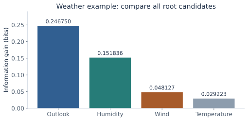
| Feature | Child class counts [play, no-play] | Information gain (bits) |
|---|---|---|
| Outlook | Sunny [2,3]; overcast [4,0]; rain [3,2] | 0.246750 |
| Humidity | High [3,4]; normal [6,1] | 0.151836 |
| Wind | Weak [6,2]; strong [3,3] | 0.048127 |
| Temperature | Hot [2,2]; mild [4,2]; cool [3,1] | 0.029223 |
CalculationReproduce wind gain and the two-attribute comparison
The early two-attribute comparison starts with 29 positives and 35 negatives, giving entropy about 0.993651 bits. Attribute A₁ creates counts [21+,5−] and [8+,30−]; A₂ creates [18+,33−] and [11+,2−]. Weighted child entropies are approximately 0.727776 and 0.872219, so gains are 0.265875 and 0.121432 bits. A₁ is preferred by entropy gain. Comparing a single child's purity would not reproduce this decision.
The weather root
For wind, weak has [6+,2−] and strong has [3+,3−]. The child entropies are about 0.811278 and 1. Therefore:
Continue the treeRecalculate within sunny and rainy children
Now recalculate within each child. Overcast becomes a play leaf. Among sunny observations, high humidity has [0+,3−] and normal humidity [2+,0−], so humidity makes both children pure and gains the sunny node's whole entropy h(2/5)≈0.970951. Among rainy observations, weak wind has [3+,0−] and strong wind [0+,2−], so wind makes both children pure. The child decision is conditioned on its path, not chosen by reusing the original root ranking unchanged.
This yields five pure leaves for the training weather sample. It demonstrates recursive fitting; it is not evidence of zero population error or proof that a different sample would select the same tree.
For weak-wind [6+,2−] and strong-wind [3+,3−], complete the weights: ____ and ____. Why does the root choose outlook instead of wind?
Check your reasoning
The weights are 8/14 and 6/14. Wind gain is about 0.048127 bits; outlook’s three-way partition gains about 0.246750 bits. Compare all children under the same parent criterion.
Before moving on: Reproduce the root gains and explain why conditional child rankings can differ.
11. Search numerical thresholds on a complete small sample
Sorted distinct values give candidate gaps. Feasibility and gain are separate decisions.
Data: x=1,…,8 and y=[0,0,1,1,1,0,0,1]. The parent has [4+,4−]. At t=2.5, children have [0+,2−] and [4+,2−].
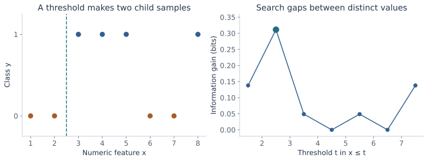
- Predict which thresholds survive a minimum child size of 3.
- Use the workbench to check; identify the smaller-threshold tie.
- Try conflicting identical inputs and explain why no separating threshold exists.
ExploreOpen the editable threshold workbench
Threshold and impurity workbench
| Threshold | Left [+,−] | Right [+,−] | Weighted child impurity | Gain |
|---|
Scroll the chart horizontally on a small screen to inspect both panels.
Use 2–40 lines with one finite x in [−1000,1000] and a label 0 or 1, separated by a comma or whitespace. Duplicate values stay together. Minimum child size is an integer in [1,40]. This tool compares a single split of one feature; it does not claim to learn a complete optimal tree. Binary prediction ties go to class 0.
CalculationReproduce the split and interpret its limits
For an original one-feature example, let x=1,…,8 and labels y=[0,0,1,1,1,0,0,1]. The parent has four positives and four negatives, so entropy is 1 bit. Midpoint candidates are 1.5,2.5,…,7.5. At t=2.5 the left child has [0+,2−] and the right [4+,2−]:
That is the largest entropy gain among these candidates. The left leaf predicts 0 and the right predicts 1. At t=4.5, both children remain evenly mixed and gain is zero. A minimum child size can exclude a candidate even when its gain is large.
Try increasing the minimum child size, changing the impurity criterion, or making every label identical. Pure labels give zero gain for every permitted split, so a normal growth procedure would stop even though the tool can still illustrate a zero-gain partition. Conflicting labels at identical x values cannot be separated by a threshold.
Before moving on: Search gaps rather than individual duplicated rows, and justify rejected candidates.
12. A regression leaf predicts a mean, and splits reduce SSE
Lecture connection: the regression question and splitting by mean squared error.
For numerical targets, replace the majority class by a mean. A split compares squared errors under consistent weighting.
For a real-valued response, a constant leaf value a is fitted by squared error. Differentiate its loss:
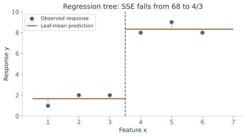
- Start: six responses [1,2,2,8,9,8] have mean 5 and SSE 68.
- Split: at x=3.5, the child means are 5/3 and 25/3.
- Compare: the two child SSEs sum to 4/3; the reduction is 200/3.
Derive & calculateMean optimality, SSE decomposition and the full calculation
The second derivative is 2n>0. A candidate split is scored by parent SSE minus the sum of child SSEs, or by an equivalent consistently weighted MSE. For a binary split:
Derive it by writing each \(y_i-\bar y_S=(y_i-\bar y_b)+(\bar y_b-\bar y_S)\) within child b. The cross terms vanish because deviations from a child's mean sum to zero. This is the same within/between decomposition used with means and covariance earlier in the notes.
For x=1,…,6 and responses [1,2,2,8,9,8], the parent mean is 5 and SSE is 68. Splitting at 3.5 gives leaf means 5/3 and 25/3, with child SSEs 2/3 each. Total SSE becomes 4/3; reduction is 200/3. The per-observation MSE changes from 68/6 to (4/3)/6=2/9.
Solve a fresh case: two children contain responses [0,2] and [8,10]. Find the leaf predictions, parent SSE and total child SSE.
Check your reasoning
Leaf predictions are 1 and 9. The parent mean is 5, so parent SSE is 25+9+9+25=68. Child SSE is 2+2=4; the reduction is 64. These are sums of squared errors, not per-observation MSE.
Before moving on: Derive the mean, use the within/between decomposition, and state SSE versus MSE units.
13. Expressive trees still face a greedy-search limit
Lecture connection: Boolean representability, exponential tree size, and the hypothesis-space search diagram.
A tree can express a pattern that greedy search fails to discover. XOR makes the distinction concrete.
Expressibility is different from finding a small good tree efficiently. The greedy split at one node maximizes a local criterion. Searching all topologies and tests would be a much larger problem, and the lecture's hypothesis-space diagram explicitly warns that greedy search need not return a globally optimal tree.
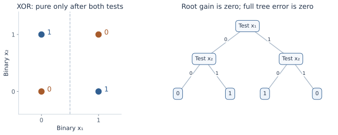
ExpressivityBoolean functions, exponential size and the XOR stopping trap
For d binary features, a tree can test all features in succession and put the desired truth-table label at each of its 2ᵈ leaves. Thus every Boolean function can be represented. A complete depth-d tree has \(2^{d+1}-1\) total nodes; some functions, such as parity under ordinary single-feature tests, need exponential-size trees.
A strict positive-gain stopping rule stops at the XOR root. Allowing a zero-gain step can cross that interaction, but also allows unhelpful growth on noise. Depth alone does not resolve the choice if the growth algorithm refuses the initial step. Pre-pruning and search rules therefore impose a bias about which patterns can be found.
Is allowing depth 2 sufficient to make a strictly positive-gain greedy learner solve balanced XOR?
Check your reasoning
No. Either single-feature root split has gain zero. A strictly positive-gain rule stops before depth 1, so the second useful test is never reached. A representation can exist without the search rule discovering it.
Before moving on: Explain zero-gain interactions without promising that unrestricted growth generalizes.
Keep the argument connected
Create a leaf; search permitted nonempty partitions; split if the declared rule allows it; recurse.
Sort distinct values at the current node. Equal values travel together; enforce minimum child sizes.
A constant leaf mean minimizes SSE. The parent-to-child reduction is n_L n_R/n times the squared difference of child means.
One path costs O(L) to predict. Re-sorting numerical features gives a conditional O(dNL log N) bound; greedy choice has no global-optimum guarantee.
Try before rereading
Answer on paper, aloud, or mentally before opening the feedback. Check your method, assumptions and interpretation.
- Which thresholds survive minimum child size 3 in the eight-observation example?
- In the fresh [0,2] / [8,10] regression case, calculate SSE reduction and MSE after splitting.
- Why can training fail to become pure despite allowing a deep tree?
Review answers and reasoning
- 3.5,4.5,5.5; entropy ties at 3.5 and 5.5, so the declared smaller-threshold rule selects 3.5.
- The reduction is 68−4=64. MSE after splitting is 4/4=1 over the four observations.
- Identical feature vectors with conflicting labels cannot be separated. Restricted tests, minimum sizes and strict gain rules can also stop growth.
Self-check: did you justify the method, state the assumptions and units, and explain the result? Separate a missing concept from an arithmetic slip.
Save your progress or a return date
Self-reported, saved in this browser where available; viewing a page does not mark mastery.
Choose a gap after trying the questions. These are heuristics, not an optimal schedule or reminder service.
Next: use validation and complexity to decide what to retain. Back to this block’s controls ↑
Control overfitting
Keep the dataset roles explicit, then compare early stopping, validation pruning, complexity costs and rule pruning.
Learn: follow the examples and open the full explanations when ready. These controls affect sections 14–20 only.
14. Better training fit can mean worse prediction
Lecture connection: training versus distribution error, accuracy against tree size, and validation control.
A deeper tree can memorize training-specific variation. Its training error is observable; population error usually is not.
For a classifier h, training error is the observed fraction of wrong labels. Population error is the probability of a mistake on a fresh draw from the task distribution:
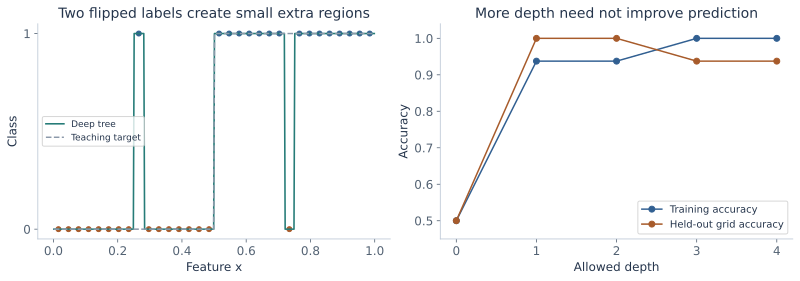
GeneralizationWhy training error can fall while prediction worsens
The lecture describes overfitting by comparing h with an alternative h′: h fits training better but has larger population error. We cannot usually inspect R(h) exactly; validation and test samples estimate predictive behavior with sampling uncertainty.
If a majority leaf is split and each child predicts its own training majority, training errors cannot increase: \(\sum_b\max_c n_{bc}\ge\max_c\sum_b n_{bc}\). Deepening the tree can isolate mislabeled observations or chance patterns, producing small unusual regions. That extra capacity need not improve new-data accuracy.
Use training data to grow the model, validation data to select depth, pruning, and other settings, and a final untouched test set to evaluate the selected procedure. Repeatedly optimizing a tree on the same validation set can overfit that set too. Cross-validation can help compare settings, with the whole fitting and selection procedure placed inside the appropriate folds.
Before moving on: Separate fitting, selection and final evaluation, and state the uncertainty of a finite comparison.
15. Stop growth early: pre-pruning
Lecture connection: gain, depth, sample count, leaf-count thresholds, complexity penalties, and significance testing.
Early stopping trades search capacity against evidence. Several size and gain limits answer different questions.
Stop growth before making a split, using declared limits on capacity, sample support or impurity improvement.
ConventionsConditional versus globally weighted gain thresholds
Pre-pruning constrains which splits may be made during growth. Common controls include a maximum depth, a maximum number of leaves, a minimum number of samples before attempting a split, a minimum number in each child, and a minimum impurity decrease. A minimum split sample count and a minimum child size are different conditions; a node can have many observations but no threshold that creates two sufficiently large children.
A local gain threshold can use the conditional node gain ΔI or the whole-training-sample weighted decrease \((n/N)\Delta I\). The latter gives small deep nodes less influence. State the convention when comparing thresholds. A model-size penalty can also discourage growth, although a post-pruning search over complete subtrees is a separate procedure developed below.
Statistical optionThe contingency table, statistic and selection assumptions
The lecture's statistical-significance option
A contingency-table test can ask whether branch membership and class labels show evidence of dependence. With observed branch/class counts \(O_{bc}\), the independence model expects \(E_{bc}=n_b n_c/n\). Pearson's statistic is:
With independent observations and suitable expected counts, its reference degrees of freedom are (B−1)(K−1), after accounting for actual nonempty categories. For a fixed two-child, two-class table [9,1] and [1,9], every expected count is 5, and the statistic is 12.8. A significance level defines a cutoff rather than making a gain value itself a p-value.
Searching many candidate features or thresholds before reporting a nominal test changes the selection problem; a naive one-test significance claim is not automatically valid for the chosen winner. Sparse expected cells also need care. This is an optional stopping strategy, not a universal replacement for predictive validation. Early stopping can miss interactions, as XOR already showed.
Before moving on: Distinguish minimum split size from child size, and qualify significance tests after searching many candidates.
16. Grow first, then compare a subtree with a replacement leaf
Lecture connection: post-pruning, reduced-error pruning, cached training/validation counts, and the efficiency question.
Pruning removes a subtree, not its historical training evidence. The replacement class stays tied to the training sample.
Replace a subtree with one leaf. Fit the replacement label from training counts; compare its validation performance with the current subtree.
Decision ruleReplacement labels, validation errors and ties
Post-pruning starts from a grown tree and removes selected subtrees. Reduced-error pruning compares predictions on a validation set. For a candidate internal node v, replace its whole subtree by a leaf whose class is the majority among the training observations reaching v. Compare that candidate with the current subtree on validation observations reaching v. The rest of the tree routes and predicts those outside observations as before.
Accept a replacement when the specified validation criterion improves, or remains equal if the tie rule favors a smaller tree. The replacement label is fitted from training counts. Taking a new majority from validation labels would change what is being fitted and invalidate the intended hold-out comparison.
DerivationEfficient bottom-up correct-count recurrence
Answer the lecture's efficiency question
Route each validation observation through the fixed initial tree once. At every visited node, record its validation counts \(V_{v,c}\). Store training counts as well, giving a fixed replacement class \(m_v=\arg\max_c N_{v,c}\). A replacement leaf gets \(V_{v,m_v}\) validation observations correct.
For a bottom-up variant, let \(C_v^*\) be the best correct count obtainable by pruning the subtree rooted at v. At an existing leaf, use its fixed prediction. At an internal node:
On a tie, choose the leaf. If the node is retained, each child's already chosen version supplies its predictions. Validation observations in different child regions are disjoint, so correct counts add. By induction from the leaves upward, this dynamic-programming variant finds the highest validation accuracy among prunings of the fixed initial tree with these fixed replacement labels. This claim is about that restricted search space and additive accuracy objective; it does not prove optimality among newly grown trees or for population error.
For M validation observations and depth L, routing costs O(ML), followed by a linear pass over the initial nodes for fixed class count. Cached counts avoid rerunning the whole validation set for every candidate. Other greedy pruning orders are possible and should be specified. A node with no validation observations gives no evidence about its predictive advantage; a tie-to-leaf choice there expresses a simplicity convention.
A replacement node has training counts [2+,6−] and validation counts [3+,1−]. Which label must its replacement leaf use, and how many validation errors does it make?
Check your reasoning
It predicts class 0 from the training majority and makes 3 validation errors. Refitting its label to the validation majority would change the hold-out comparison. Compare those 3 errors with the current subtree’s validation errors.
Before moving on: Use cached counts to explain both the efficiency and the restricted optimality claim.
17. Calculate every pruning of a small tree
The best validation pruning can worsen training fit. Enumerating every subtree makes the comparison reviewable.
The following invented initial tree tests x≤4 at its root. Its left child tests x≤2; its right child tests x≤6. Thus it has four leaves A,B,C,D, from left to right. Training and validation counts are separate:
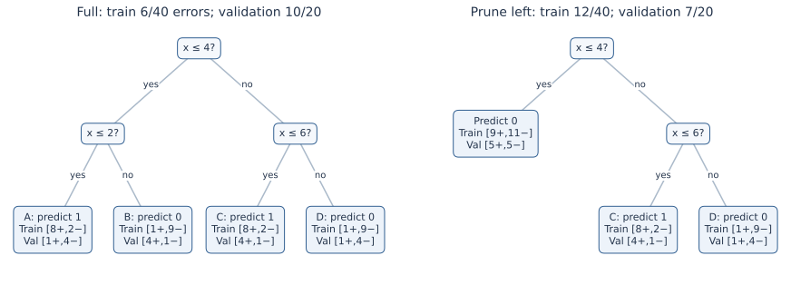
| Pruning | Leaves | Training errors / 40 | Validation errors / 20 |
|---|---|---|---|
| Full tree | 4 | 6 | 10 |
| Prune left child | 3 | 12 | 7 |
| Prune right child | 3 | 12 | 13 |
| Prune both children | 2 | 18 | 10 |
| Replace root | 1 | 18 | 10 |
- Full tree: training errors 6/40; validation errors 10/20.
- Prune the left child: training errors increase to 12/40, but validation errors decrease to 7/20.
- Keep the right subtree: pruning it instead raises validation errors to 13/20.
Counts & labelsReproduce the four leaf counts and replacement decisions
| Original leaf | Region | Training [+,−] | Fixed prediction | Validation [+,−] |
|---|---|---|---|---|
| A | x≤2 | [8,2] | 1 | [1,4] |
| B | 2<x≤4 | [1,9] | 0 | [4,1] |
| C | 4<x≤6 | [8,2] | 1 | [4,1] |
| D | x>6 | [1,9] | 0 | [1,4] |
The full tree makes 2+1+2+1=6 training errors out of 40 and 4+4+1+1=10 validation errors out of 20. Each root child aggregates to training counts [9+,11−], so either replacement child leaf predicts 0. The root aggregates to [18+,22−] and also predicts 0.
Replacing the left subtree raises its training errors from 3 to 9, but lowers its validation errors from 8 to 5. The full tree's totals become 12 training errors and 7 validation errors. Replacing the right subtree instead raises its validation errors from 2 to 5, so it is rejected by validation accuracy.
Search orderWhy a premature root replacement can lose the best option
These are all five prunings of this fixed binary tree. Once the left subtree has been replaced, replacing the root worsens validation error from 7 to 10 and is rejected. Replacing the root before inspecting descendants would tie the original full tree's validation accuracy and could discard the better left-pruned option. This is why the search order and comparison procedure matter.
Before moving on: Reproduce all five candidates and explain why bottom-up comparison matters.
18. Trade fit against size with a complexity penalty
Lecture connection: impurity plus a penalty for node count; the following subtree derivation makes the risk and size conventions explicit.
A complexity penalty defines a tradeoff in stated units. It need not choose the validation-best tree.
Another way to control size is to define a cost for a whole tree T:
Here R is training misclassification rate and the size is the number of leaves. α charges per leaf. A different risk convention changes the penalty’s numerical scale.
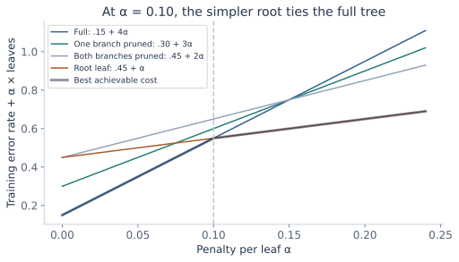
Root leaf: 0.50. Training-rate cost favors the full tree.
Full tree: 0.75. The smaller tree now has lower cost.
Units & assumptionsRisk conventions, node penalties and parameter selection
Here \(\mathcal L(T)\) is its set of leaves. In the worked example, R(T) is the training misclassification rate. Another implementation may use a weighted leaf-impurity sum \(\sum_\ell(n_\ell/N)I(S_\ell)\), or SSE for regression. Those choices change the cost and the useful numerical scale of α. Unweighted sums of leaf impurities answer a different question.
The lecture writes a penalty for total nodes rather than leaves. Both are size penalties, but their parameter values are not identical. For a full binary tree, total nodes equal \(2|\mathcal L|-1\), so \(R+\beta|\text{nodes}|=R+2\beta|\mathcal L|-\beta\). Minimizers agree with a leaf penalty α=2β; the constant −β does not affect selection. That conversion assumes every internal node has exactly two children.
The lecture lists complexity control alongside early stopping; a penalty can discourage a split during growth, while minimal cost-complexity post-pruning searches prunings of a grown tree. They are different algorithms. Select the penalty by validation or cross-validation; minimizing the training-plus-size criterion alone does not measure future error.
CalculationCheck the complete cost envelope and α=0.10 crossover
Compare complete subtree costs
For the five candidates above, the training risks are 0.15,0.30,0.30,0.45,0.45. The full-tree and root-leaf lines cross when:
Checking all five candidates shows that the full tree minimizes this cost for α<0.10; the root leaf minimizes it for α>0.10. At equality, the stated smaller-tree tie rule selects the root. The validation-best left-pruned tree is never the cost optimum for this particular training risk. The objectives need not choose the same subtree.
DerivationEffective α and weakest-link pruning
Derive an effective penalty for removing a branch
For an internal node v with current descendant subtree Tᵥ, compare keeping all its leaves with replacing it by one leaf. Using contributions weighted by the whole training sample's N, equality occurs at:
This is the increase in fitted risk per leaf removed. Weakest-link cost-complexity pruning removes the branch with the smallest effective value and updates the remaining tree. In the example, each child branch has effective α=(9−3)/40=0.15, while the root has (18−6)/(40×3)=0.10, so the root is the first weakest link. This explains the two-tree cost path.
The risk is changed from training error rate to the training error count for N=40. What count penalty per leaf corresponds to rate penalty α=0.10?
Check your reasoning
Use λ=Nα=4 errors per leaf. Multiplying the entire rate-based objective by 40 preserves its minimizers. Reusing 0.10 with error counts changes the tradeoff.
Before moving on: State the risk, normalization, size unit and tie rule before comparing costs.
19. Explore validation decisions and complexity costs separately
Use the tool to test a prediction you have already made. Changing validation evidence does not change the fixed training labels.
- Training counts determine every leaf prediction.
- Validation errors select the validation-best subtree.
- Training rate plus α per leaf defines the separate cost choice.
- Predict the validation choice and the cost choice at α=0.05.
- Inspect the query x=1.5 before and after pruning the left child.
- Try α=0.10 and then remove all validation observations. Distinguish a cost tie from an undefined validation rate.
ExploreOpen the pruning and model-selection workbench
Pruning and model-selection workbench
| Original region | Training + | Training − | Validation + | Validation − |
|---|---|---|---|---|
| A | 8 | 2 | ||
| B | 1 | 9 | ||
| C | 8 | 2 | ||
| D | 1 | 9 |
| Candidate | Leaves | Training errors | Validation errors | Training rate + α×leaves |
|---|
Scroll the tree and cost chart horizontally on a small screen.
Validation counts must be integers in [0,1000]. α is in [0,0.3] and the query is in [−1000,1000]. Smaller leaf count wins a selection tie; remaining ties follow the displayed candidate order. Empty validation data give no accuracy estimate, so a smallest-tree tie is a convention only. All calculations stay in this page.
InterpretWhat the default and edited choices mean
This workbench uses the fixed initial tree and training counts from section 17. Edit its validation counts, inspect any pruning, or apply the best validation choice. The cost-based action instead minimizes training error rate plus α per leaf. Predictions and replacement labels always use the fixed training counts.
At the defaults, validation chooses the left-pruned tree and α=0.05 chooses the full tree. Change α to 0.10 to see the smaller-tree cost tie. Change validation evidence in A and B to see when keeping their distinguishing split becomes useful. The tool compares all five possible prunings; it does not refit the original thresholds or grow new branches.
Before moving on: Explain why validation selection, size-penalized training selection and prediction routing can disagree.
20. Convert paths to rules, then prune conditions carefully
Lecture connection: root-to-leaf conjunctions and rule-based post-pruning.
Deleting a condition can change more than one path’s old region. Independently pruned rules need a complete prediction policy.
Removing a condition lets a rule cover more inputs. Check the complete classifier for overlaps, conflicts and cases with no matching rule.
Coverage & conflictsEvaluate the complete rule classifier, including its default
A root-to-leaf path gives a rule such as \(A\land B\land C\Rightarrow1\). Rule pruning considers removing one or more conditions: deleting B gives \(A\land C\Rightarrow1\). The rule then covers at least as many inputs, including some that did not reach the original leaf.
Evaluate the broadened rule on the designated selection data under a specified rule-selection criterion. Removing a logically redundant condition leaves coverage unchanged; removing a useful one may improve robustness or create errors. It is not equivalent to simply deleting the last tree node, because a condition high on the path can be removed from one rule while retained in another.
Original tree paths are mutually exclusive and collectively cover the input space when routing is fully defined. Independently pruned rules can overlap, predict conflicting labels, or leave cases without a matching rule. An ordered rule list, conflict-resolution policy, and default prediction may therefore be needed. Evaluate the resulting complete classifier, including those policies, rather than assuming each separately simplified rule preserves the original tree's behavior.
A rule A AND B ⇒ 1 is simplified to A ⇒ 1. Another rule is NOT B ⇒ 0. Which input pattern makes the new rules disagree?
Check your reasoning
A true and B false matches both simplified rules, producing conflicting predictions 1 and 0. An ordering or other resolution rule is needed, and the full classifier must be evaluated.
Before moving on: Separate subtree replacement from condition removal and handle overlap or uncovered cases.
Keep the argument connected
Train to fit, validate to select, test to evaluate the selected procedure. Validation itself can be overfit.
Pre-pruning prevents branches; post-pruning removes branches after growth. Post-pruning cannot restore branches never grown.
The replacement label is a training majority. Cached validation correct counts add over disjoint child regions.
R(T)+αL: state the risk and its normalization. Full binary nodes=2L−1; node penalty β corresponds to leaf penalty 2β.
With zero validation observations, accuracy is undefined. A smaller-tree tie is a simplicity convention, not measured accuracy.
Try before rereading
Answer on paper, aloud, or mentally before opening the feedback. Check your method, assumptions and interpretation.
- Explain why pruning can increase training error and improve validation error.
- At α=0.08, compare full-tree cost 0.15+4α with root cost 0.45+α; what changes at 0.12?
- Compute the best validation correct counts for the default left child, right child and root.
- Why can independent rule pruning create conflicting predictions?
Review answers and reasoning
- Training and validation samples can favor different structures. The default left pruning changes errors from 6→12 in training and 10→7 in validation.
- At 0.08: full 0.47 versus root 0.53, so full wins. At 0.12: full 0.63 versus root 0.57, so root wins. The full five-subtree comparison confirms the envelope.
- Left: max(2,5)=5; right: max(8,5)=8; root: max(10,13)=13. Retain the root and right subtree, prune left.
- Removing a condition broadens a rule independently of other rules. Previously disjoint paths can overlap; resolve conflicts as part of the classifier.
Self-check: did you justify the method, state the assumptions and units, and explain the result? Separate a missing concept from an arithmetic slip.
Save your progress or a return date
Self-reported, saved in this browser where available; viewing a page does not mark mastery.
Choose a gap after trying the questions. These are heuristics, not an optimal schedule or reminder service.
Next: combine randomized trees and examine practical limits. Back to this block’s controls ↑
Connect the tree to an ensemble
Finish with the lecture’s forest introduction and the practical judgments that prevent overclaiming.
Learn: follow the examples and open the full explanations when ready. These controls affect sections 21–22 only.
21. The closing bridge: randomized trees and forests
Lecture connection: repeatedly sample examples/features, build trees, and combine them; the distinctions below make the sampling procedure explicit.
An ensemble needs members that differ and a clear aggregation rule. A larger tree count alone does not remove shared variation.
Combine trees that differ through data and feature randomization.
- Subset per tree: a fixed random-subspace restriction.
- Subset per split: fresh candidate features at each node in a common bootstrap forest.
Sampling & aggregationBootstrap, per-tree subsets, votes and out-of-bag predictions
The final handwritten sketch grows many trees after randomly choosing observations and features. It motivates an ensemble whose members differ. A fixed feature subset chosen once per tree is a random-subspace construction. In the common Breiman-style random forest, each tree uses a bootstrap training sample, and a fresh random subset of candidate features is considered at each split. These are distinct randomization conventions; the lecture's shorthand should not conceal where the subset is drawn.
Bootstrap sampling draws observations with replacement, usually N draws for N training observations, so some observations repeat and others are absent from a tree's sample. Classification can combine class votes; regression averages predictions. Averaging class probabilities and taking a majority of hard class labels are different aggregation rules and should be specified. A hundred trees is an example setting, not the definition of a forest. Deep growth still needs feasible stopping rules when no valid split remains.
A bootstrap draw omits a given training observation with probability \((1-1/N)^N\), approaching e⁻¹. Predictions for that observation from only trees that omitted it are called out-of-bag predictions. Their evaluation can be useful, but it must still respect the intended sampling and model-selection procedure. Full forest tuning, boosting, and ensemble comparisons deserve further notes beyond this introductory sketch.
Supplementary derivationWhy correlation limits averaging variance
Optional foundation: why correlation matters when averaging
Suppose B real-valued tree predictions at one input have the same variance σ² and common pairwise correlation ρ. Expand the variance of their mean, counting B diagonal terms and B(B−1) covariance terms:
For independent predictions, averaging reduces this variance by B. With positive correlation, the expression approaches ρσ². The calculation explains a motivation for diversity; it is not a formula for classification error, and the common-variance/common-correlation assumptions need not hold exactly in a fitted forest.
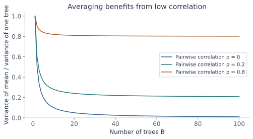
With N=10 draws with replacement, is every observation necessarily included? What if the same feature subset is fixed for an entire tree?
Check your reasoning
No. A given observation is omitted with probability (9/10)¹⁰≈0.348678. A feature subset fixed per tree is a random-subspace convention; it differs from sampling fresh candidate features at each split.
Before moving on: Distinguish bootstrap sampling, per-node feature randomization and the supplementary covariance calculation.
22. Practical choices and connections
Practical claims depend on the fitting procedure and data. Keep the feature representation, probability meaning and evaluation setup explicit.
Data & representationMemorization, scaling and axis-aligned splits
Feature count and memorization: a nominal identifier with one unique value per training observation can make every child pure and receive maximum empirical entropy gain. That does not make the identifier predictive for new observations. Minimum child size, validation, and suitable feature handling address different parts of the problem. Gain-ratio and other criteria are further methods with their own tradeoffs, rather than guarantees that high-cardinality bias disappears.
Scaling and representation: a positive affine unit conversion preserves numerical order and maps a threshold to an equivalent threshold. Trees therefore do not need feature standardization merely to put magnitudes on the same scale. Their axis-aligned split family still depends on the feature representation: a rotation such as PCA can change how many simple cuts describe a boundary.
Prediction & interpretationCosts, stability, importance and algorithm families
Probabilities and costs: majority prediction assumes equal misclassification costs. Class imbalance and unequal costs can require a different prediction or training objective. Leaf proportions, smoothing, and probability calibration are separate choices. A large or stable-looking tree diagram alone does not establish accurate probabilities.
Stability and importance: small data changes can switch a nearly tied best split near the root and change many descendants. Feature-importance summaries based on training impurity reduction describe the fitted procedure and can favor features offering many candidate splits. They do not prove causation. Held-out evaluation and the task's meaning still matter.
Algorithm families: ID3-style information-gain growth, binary CART-style trees, regression trees, and different pruning procedures make different choices. State the test family, impurity, stopping rules, leaf prediction, and pruning objective explicitly. The lecture's formulas teach those components; they do not imply every library implements the same combination.
Before moving on: Connect each claimed benefit to its assumptions and a failure case.
Keep the argument connected
A bootstrap sample per tree and fresh candidate features per node differ from a single fixed feature subset.
Hard votes and averaged probabilities are distinct rules; specify which the classifier uses.
Under equal variances and common pairwise correlation, mean variance is σ²[ρ+(1−ρ)/B]. It is not a classification-error formula.
Axis-aligned splits depend on representation. Small pure leaves need not give reliable probabilities; impurity importance does not establish causation.
Try before rereading
Answer on paper, aloud, or mentally before opening the feedback. Check your method, assumptions and interpretation.
- Why does drawing N bootstrap samples not select N distinct observations?
- Ten predictions have unit variance and common correlation 0.2. Calculate mean variance and its limiting value.
- Why can scaling and rotating features have different effects on ordinary tree splits?
Review answers and reasoning
- Sampling uses replacement, so observations can repeat or be omitted.
- Variance is 0.2+0.8/10=0.28; the limit is 0.2 under the stated common-correlation assumptions.
- Positive affine scaling preserves feature order and corresponding partitions; rotation changes the coordinate directions available to axis-aligned tests.
Self-check: did you justify the method, state the assumptions and units, and explain the result? Separate a missing concept from an arithmetic slip.
Save your progress or a return date
Self-reported, saved in this browser where available; viewing a page does not mark mastery.
Choose a gap after trying the questions. These are heuristics, not an optimal schedule or reminder service.
Next: choose a practice route and attempt a mixed question without the chapter labels giving away its method. Back to this block’s controls ↑
23. Practice: calculate the split and justify the pruning
Choose a route, then mix question types. The original 26 problems and their complete solutions follow.
These are original questions for these notes. State the class-count convention, criterion, sample-size weights, routing inequality, and selection dataset before calculating. A smaller impurity or a smaller tree is meaningful only relative to its stated objective.
1 · Follow a numerical path
Use the tree in section 2. Classify (x₁,x₂)=(2,4), (4,5), and (4,5.01). Explain the equality case.
Solution and reasoning
The first point takes the left root branch and the upper-left region, predicting 1. The second takes the right root branch and satisfies x₂≤5, predicting 1. The last exceeds 5 and predicts 0. The specified ≤ convention determines where a boundary point goes.
2 · Count nominal versus ordinal candidates
A feature has four observed categories. How many distinct nonempty subset/complement binary groupings exist? How many adjacent gaps exist if those categories have a meaningful order?
Solution and reasoning
There are 2³−1=7 unordered binary groupings, excluding empty sides and identifying complementary subsets. An ordered four-value feature has three adjacent gaps. Arbitrary numerical codes do not make the nominal case ordinal.
3 · Fit a constant leaf
A binary leaf receives three positives and five negatives. Find its empirical positive probability, majority prediction, error count, and Gini impurity.
Solution and reasoning
The positive probability is 3/8, prediction is 0, and the leaf makes three training errors. Gini is 1−(3/8)²−(5/8)²=30/64=0.46875. This differs from majority-error impurity 3/8.
4 · Multiclass maxima
Three classes have counts [2,2,2]. Calculate Gini and entropy, and explain why they are maximal for three classes.
Solution and reasoning
Each proportion is 1/3. Gini is 1−3/9=2/3 and entropy is log₂3≈1.584963 bits. The uniform distribution minimizes the sum of squared proportions and maximizes entropy. The binary maxima 1/2 and 1 do not apply unchanged.
5 · Entropy endpoints and units
Calculate entropy for [3+,1−] and [4+,0−]. Explain why the zero-count term is not evaluated as log0.
Solution and reasoning
The first is −¾log₂¾−¼log₂¼≈0.811278 bits. The pure node has entropy zero. The function p log p has limit zero at p=0, so an absent class contributes zero by continuity. Natural logarithms would change the units and scale.
6 · Score one partition three ways
Split a [4+,4−] parent into [0+,2−] and [4+,2−]. Calculate the entropy, Gini, and majority-error decreases.
Hint
The children have weights 2/8 and 6/8; the right positive proportion is 2/3.
Solution and reasoning
Entropy decrease is 1−(6/8)h(2/3)≈0.311278 bits. Gini decrease is ½−(6/8)(4/9)=1/6. Majority-error decrease is ½−2/8=¼. These are different numerical criteria, so compare candidates within one specified criterion.
7 · Explain zero immediate accuracy gain
In the lecture's [40+,80−] example, verify that children [28+,42−] and [12+,38−] give zero majority-error decrease but positive entropy decrease.
Solution and reasoning
All three majority predictions are 0, leaving 28+12=40 errors. Entropy decreases from about 0.918296 to (70/120)×0.970951+(50/120)×0.795040≈0.897655. Gain is about 0.020641 bits. Child proportions differ even though their majority labels agree.
8 · Recompute the weather wind gain
Use the root [9+,5−], weak-wind [6+,2−], and strong-wind [3+,3−] counts. Why is averaging the two child entropies equally incorrect?
Solution and reasoning
The weighted calculation is 0.940286−(8/14)×0.811278−(6/14)×1≈0.048127 bits. The two child sample sizes differ, so equal weighting would not represent the average uncertainty of a random observation from the parent.
9 · Continue within a child
After selecting outlook at the weather root, the sunny node has high-humidity [0+,3−] and normal-humidity [2+,0−] children. Find the conditional humidity gain and the resulting predictions.
Solution and reasoning
The sunny parent entropy is h(2/5)≈0.970951. Both child entropies are zero, so humidity gains the whole 0.970951 bits at that node. High humidity predicts no-play and normal predicts play. Root-level humidity gain is a different conditional calculation.
10 · Keep duplicate feature values together
The observations are (1,0),(1,1),(3,1),(3,1). List the distinct threshold partition and calculate its entropy gain. Can any x-threshold separate the contradictory observations at x=1?
Solution and reasoning
The only gap is between 1 and 3; t=2 is a representative. The left child has [1+,1−] and the right [2+,0−]. Parent entropy is h(3/4)≈0.811278, child average is 1/2, and gain is about 0.311278. Equal x values cannot be sent to different children by a deterministic threshold.
11 · A minimum child size changes the search
For section 11's eight observations, require at least three samples in each child. Which thresholds remain, and which entropy-best threshold wins the tie rule?
Solution and reasoning
The valid candidates are 3.5,4.5,5.5. Their gains are about 0.048795,0,0.048795. The smaller-threshold tie convention selects 3.5. The original best 2.5 is invalid because its left child has only two observations.
12 · A zero-gain first step
For balanced XOR, calculate the root entropy and the information gain of either feature. What changes after testing the other feature inside each child?
Solution and reasoning
Root entropy is 1. Each feature produces two children with one label of each class, so weighted entropy remains 1 and gain is zero. A second feature test makes all leaves pure. A strict positive-gain stopping rule cannot reach those useful deeper tests.
13 · A limit on perfect training fit
Two observations have identical available features but opposite labels. What minimum error can any deterministic classifier achieve on just those two observations?
Solution and reasoning
It must give both the same prediction, so at least one is wrong: error rate 1/2. Increasing tree depth cannot invent a distinguishing feature. The pure-leaf stopping algorithm needs a fallback for impure samples with no valid split.
14 · Count nodes and inference work
A complete binary tree has depth three. Count its leaves and total nodes. How many tests does a deepest prediction evaluate?
Solution and reasoning
It has 2³=8 leaves and 2⁴−1=15 total nodes. A deepest prediction evaluates three tests, one per edge along its path. It does not evaluate all fifteen nodes.
15 · State the complexity assumptions
Why can sorting and scanning one node cost O(dn log n), and why is a depth-L bound O(dNL log N) conditional on the search method?
Solution and reasoning
Sort each of d features and maintain cumulative class counts while scanning its gaps. At each depth, node sample sizes sum to N; re-sorting gives the stated bound across L depths. Exhaustive nominal grouping, rebuilding histograms per gap, or preserving sorted orders changes the accounting. The bound does not guarantee that a perfectly fitting small tree exists.
16 · Fit two regression leaves
For responses [1,2,2] and [8,9,8] in two children, calculate their means, total SSE, and the improvement over the parent mean.
Solution and reasoning
The means are 5/3 and 25/3. Each child has SSE 2/3, totaling 4/3. The parent mean is 5 with SSE 68, so the improvement is 200/3. The between-child identity gives (3×3/6)×(20/3)²=200/3 too.
17 · Recognize overfitting without knowing population error exactly
A deeper tree lowers training error but raises validation error. What does that suggest, and what cannot be concluded from one finite validation comparison?
Solution and reasoning
It suggests the added complexity is fitting training-specific variation and supports preferring the simpler candidate under that validation procedure. A finite comparison has sampling uncertainty; it is not an exact measurement of population error or proof that every deeper tree is worse. The final test set should remain outside that selection loop.
18 · Calculate the significance-test statistic
A fixed split gives the 2×2 class table [9,1] and [1,9]. Compute expected counts under independence, Pearson's statistic, and reference degrees of freedom. Why does searching many splits complicate a nominal one-test claim?
Solution and reasoning
All row and column totals are 10 out of 20, so every expected cell is 5. The statistic is four times 16/5=12.8, with (2−1)(2−1)=1 reference degree of freedom under the test's assumptions. Choosing the most extreme result after many searches changes the selection procedure and its false-positive behavior.
19 · Validate one replacement leaf
For the left subtree in section 17, derive its replacement class and compare training and validation errors before and after replacement. Why is the right subtree treated differently?
Solution and reasoning
Left training counts aggregate to [9+,11−], so the replacement predicts 0. Training errors increase from 3 to 9; validation errors fall from 8 to 5. Right validation errors instead increase from 2 to 5, so validation rejects that replacement. Both replacement labels still come from training counts.
20 · Find the complexity crossover
Compare the full tree's 0.15+4α with the root leaf's 0.45+α. Find the crossover and explain why checking only those two costs is insufficient in a general tree.
Solution and reasoning
Equality gives 3α=0.30, so α=0.10. Here the complete five-candidate comparison confirms that no intermediate pruning has a lower cost. In another tree an intermediate subtree may win over a range of α, so a pairwise root/full comparison alone would not establish the lower envelope.
21 · Convert node-count and leaf-count penalties
For full binary subtrees, how does a total-node penalty β relate to the leaf-count penalty α? Check β=0.05 for the full and root trees.
Solution and reasoning
Total nodes equal 2L−1, so α=2β and costs differ by the constant −β. At β=0.05, the full tree costs 0.15+0.05×7=0.50 and the root costs 0.45+0.05=0.50. The corresponding leaf penalty is α=0.10.
22 · Execute the bottom-up count calculation
For the default pruning example, calculate best validation correct counts for the left child, right child, and root. State which subtrees are retained.
Hint
A positive leaf gets its validation positive count correct; a negative leaf gets its negative count correct.
Solution and reasoning
Left original leaves get 1+1=2 correct; replacing them by class 0 gets 4+1=5, so prune left. Right original leaves get 4+4=8; replacing them gets 1+4=5, so retain right. Root replacement gets ten negatives correct, while the chosen children get 5+8=13, so retain the root split. Final validation errors are 20−13=7.
23 · No validation observations
If every validation count is zero, what does a tie-to-smaller-tree pruning rule choose? Is its validation accuracy then 100%?
Solution and reasoning
Every correct count ties at zero, so the rule can collapse to the root leaf for simplicity. Accuracy would be 0/0 and is undefined. The choice is a complexity convention without held-out evidence, not a measured predictive improvement.
24 · Prune a rule without assuming exclusivity
Originally one rule is A∧B⇒1 and another is ¬B⇒0. What happens if B is removed from the first rule?
Solution and reasoning
The new rule A⇒1 overlaps the second whenever A is true and B is false. The classifier needs an ordering or other conflict-resolution policy, and that complete behavior must be evaluated. A collection of independently broadened rules need not retain a tree's disjoint-path property.
25 · Specify forest randomization
Distinguish a feature subset fixed once per tree from a fresh subset at each node. For N=10 bootstrap draws, find the probability a particular observation is never drawn.
Solution and reasoning
A fixed subset defines a random-subspace restriction for the whole tree; per-node randomization offers a newly sampled candidate set at each split. A bootstrap draw uses replacement, and omission probability is (9/10)¹⁰≈0.348678. Drawing ten items with replacement is not choosing ten distinct observations.
26 · Compute an averaging variance
Ten real-valued tree predictions have unit variance and common pairwise correlation 0.2. Find the variance of their mean and its large-ensemble limit.
Solution and reasoning
The variance is 0.2+0.8/10=0.28. As the number grows, the expression approaches 0.2. With independent predictions it would be 1/10 instead. These are variance calculations under stated assumptions, not classification error rates.
24. Explain trees and pruning in an interview
“How does a decision tree make a prediction?”
It evaluates feature tests along one root-to-leaf path, then returns the leaf's class or value. Numerical single-feature tests give axis-parallel regions; each path is a conjunction of conditions. Inference cost follows path depth, while a very large tree may still be difficult for a person to interpret globally.
“Why use entropy or Gini instead of training accuracy to grow the tree?”
They respond to changes in class proportions even when child majority labels stay the same. The lecture's 40/80 example has zero immediate classification-error decrease but positive entropy and Gini decreases. Further splits can use that structure; validation must still assess whether it generalizes.
“How do you split continuous and categorical features?”
For a numerical feature, compare partitions at gaps between distinct sorted node values. Ordinal categories can use their order. Nominal categories can use multiway, one-versus-rest, or subset tests; arbitrary integer codes do not create an intrinsic order. State the allowed test family and minimum child sizes.
“Does greedy tree learning find the best tree?”
No general guarantee follows from selecting the best immediate split. Interactions such as XOR can require a zero-gain first step, and globally searching tree structures is much larger than a local scan. A tree can represent a pattern without the chosen growth-and-stopping procedure discovering it.
“What is the difference between pre-pruning and post-pruning?”
Pre-pruning prevents growth using limits such as depth, child size, or gain. Post-pruning first permits a richer tree and then replaces subtrees or simplifies rules under a selection criterion. The permitted growth still matters: post-pruning cannot restore branches that were never grown.
“How can reduced-error pruning be efficient?”
Cache training-majority replacement labels and validation class counts at each node. A bottom-up pass compares correct counts from the retained children with the replacement leaf. With fixed labels and additive accuracy, the recurrence can optimize among prunings of that initial tree without repeatedly rerouting all validation observations.
“What does the cost-complexity parameter mean?”
It is the cost charged per unit of model size, commonly a leaf, added to a specified fitted risk. Larger values favor smaller subtrees. Its numerical meaning depends on whether risk is a rate, an error count, SSE, or weighted impurity, and whether size counts leaves or all nodes.
“Can a tree need scaling, smoothing, or calibration?”
Positive affine feature rescaling maps equivalent threshold partitions, so magnitude standardization is usually not needed solely for numerical comparison. Representation and rotation still matter. Leaf probabilities can be extreme or unreliable in small samples, so smoothing and calibration remain separate predictive choices.
“What distinguishes a forest from repeating the same tree?”
Its trees differ through data and feature randomization. A common construction uses bootstrap samples per tree and candidate-feature subsets per node, then combines predictions. The covariance-of-an-average calculation shows why highly correlated tree predictions limit variance reduction.
“Does an interpretable tree guarantee fair or lawful decisions?”
A tree exposes a path of conditions, which can help inspection. The learned features, proxies, data, task and applicable requirements still determine whether its behavior is acceptable. Interpretability, predictive accuracy, causal validity and legal compliance are distinct properties to assess.
25. Revision: keep the criterion and dataset explicit
| Quantity | Formula / rule | Interpretation |
|---|---|---|
| Leaf probabilities | \(\hat p_c=n_c/n\) | Training proportions; n>0. |
| Majority leaf | \(\arg\max_c n_c\) | Equal-cost label; error count \(n-\max_c n_c\). |
| Gini | \(1-\sum_c p_c^2\) | Maximum 1−1/K; binary 2p(1−p). |
| Entropy | \(-\sum_c p_c\log_2p_c\) | Bits; maximum log₂K; 0log0=0. |
| Split decrease | \(I(S)-\sum_b(n_b/n)I(S_b)\) | Weight by child sample size. |
| Numerical candidates | Gaps between distinct sorted values. | Reject empty or undersized children. |
| Regression leaf | \(\bar y_S\) | Minimizes SSE within that leaf. |
| Regression reduction | \(n_Ln_R(\bar y_L-\bar y_R)^2/n\) | Parent SSE minus child SSEs. |
| Reduced-error leaf | Training-majority replacement. | Compare its validation predictions with the current subtree. |
| Bottom-up correct count | \(C_v^*=\max(V_{v,m_v},\sum_u C_u^*)\) | Fixed labels, disjoint child validation samples. |
| Complexity cost | \(R(T)+\alpha|\mathcal L(T)|\) | State the fitted risk and size units. |
| Full binary node count | \(2|\mathcal L|-1\) | Node and leaf penalties have different numeric scales. |
| Forest averaging variance | \(\sigma^2[\rho+(1-\rho)/B]\) | Supplementary common-variance/common-correlation model. |
Mastery checklist
Saved in this browser where local storage is available.
26. Sources and further learning
These personal notes expand Rahul Garg's decision-tree and pruning lectures (Lectures 31–32), including handwritten feature-type examples, training complexity, Gini extensions, validation-count pruning, and the closing forest sketch. The supplied teaching slides credit Greg Grudic, Thomas G. Dietterich, Tom Mitchell, Longin Jan Latecki and Piyush Rai; several impurity illustrations credit Sebastian Raschka. The lecture's weather and count examples are recalculated in prose; the scientific figures here are original.
The derivation details, numerical threshold sample, regression data, generated overfitting illustration, complete five-subtree pruning example, workbenches, practice questions and interview explanations are original teaching additions. The coding-rate qualification, bottom-up fixed-label recurrence, weakest-link derivation, significance-test assumptions, node/leaf conversion, and ensemble covariance calculation make the surrounding assumptions explicit. The forest material is introductory, rather than a claim to cover a full ensemble-learning course.
- Primary coverage: both supplied decision-tree lectures, including annotations and their repeated examples.
- Scikit-learn: Decision Trees — supplementary reference for classification/regression criteria and minimal cost-complexity pruning. The teaching tools are independent implementations and use the risk conventions stated here.
- Leo Breiman: Random Forests — primary reference for the forest construction and its data/feature randomization.
- CFPB: Regulation B, notifications — source for the limited credit-explanation context discussed at the start.
Further learning: fuller ensemble methods, calibration, resampling, and statistical model assessment can build on these foundations. The probability, likelihood, covariance, and representation chapters remain linked where they are used here.